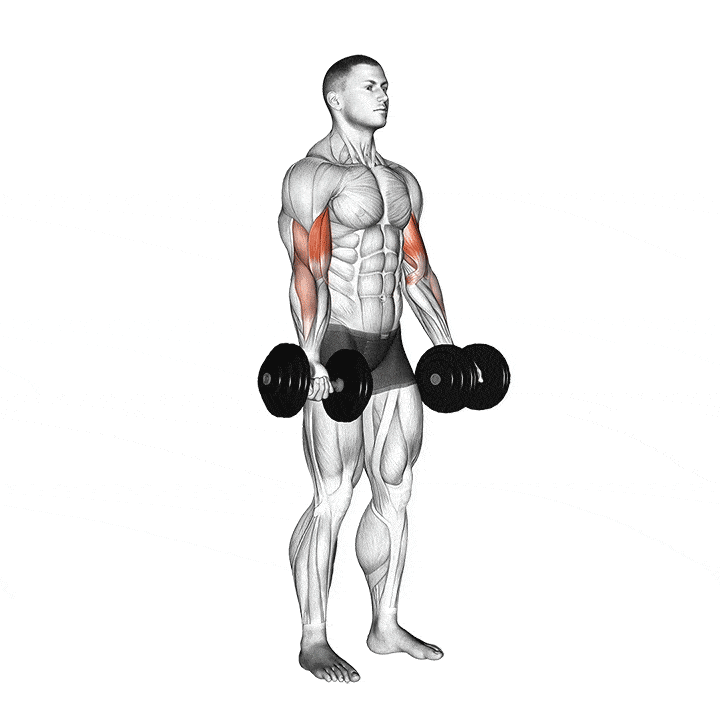
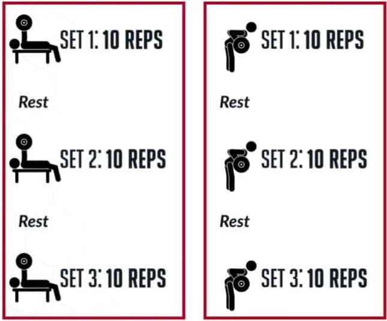
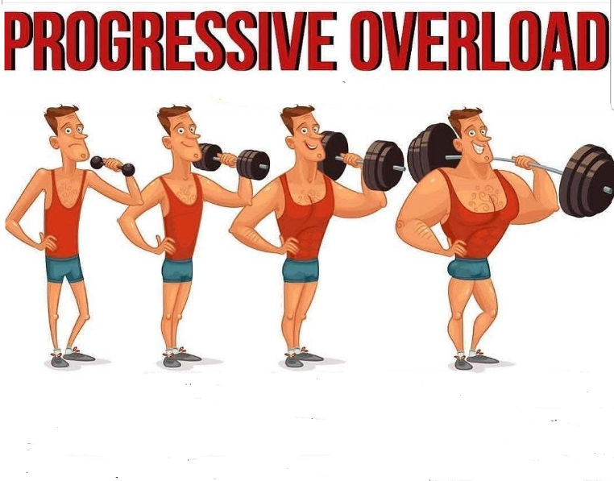
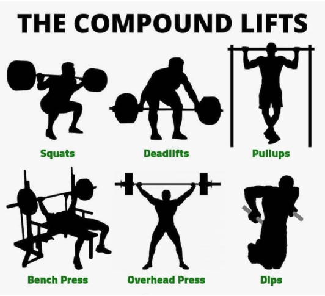

Master The Basics of Bodybuilding

What Are Reps?
In fitness and exercise, "reps" is an abbreviation for repetitions. Reps refer to the number of times you perform a specific exercise or movement in a set. For example, if you are doing bicep curls, and you do 10 repetitions, that means you have lifted the weight up and down ten times in a row. Repetitions are often combined with sets, which are a group of repetitions performed consecutively with a short rest in between.

What Are Sets?
In fitness and exercise, a "set" refers to a group of consecutive repetitions of a particular exercise. For example, if you are performing bicep curls and you do 10 repetitions, then take a brief rest before doing another 10 repetitions, you have completed two sets of bicep curls.
What does training to failure mean?
Training to failure in hypertrophy means exercising until you can't do another repetition with good form. Its goal is to maximize muscle recruitment and stimulate muscle growth, but it can be challenging and lead to fatigue. Proper form and having a spotter are important to avoid injury, and it should be used strategically and in moderation.
What does training CLOSE to failure mean?
Training close to failure in hypertrophy means performing exercises until you are very close to reaching muscular failure, but not quite there. This can help stimulate muscle growth and minimize fatigue and decreased performance in subsequent exercises. It is still important to use proper form and technique to avoid injury, and to gradually increase intensity over time. Training close to failure can be a useful technique to incorporate into a hypertrophy training program for optimal results.What volume?
Training volume in hypertrophy refers to the total amount of work performed during a training session, which is calculated by multiplying the number of sets, reps, and weight lifted for each exercise. Increasing training volume over time is a key component of progressive overload and can help stimulate muscle growth and hypertrophy.

What progressive overload?
Training progressive overload in hypertrophy means gradually increasing the demands placed on the body during exercise over time. This can be achieved by increasing weight, reps, sets, or decreasing rest periods. Progressive overload is a fundamental principle of hypertrophy training and can help stimulate muscle growth and development.
